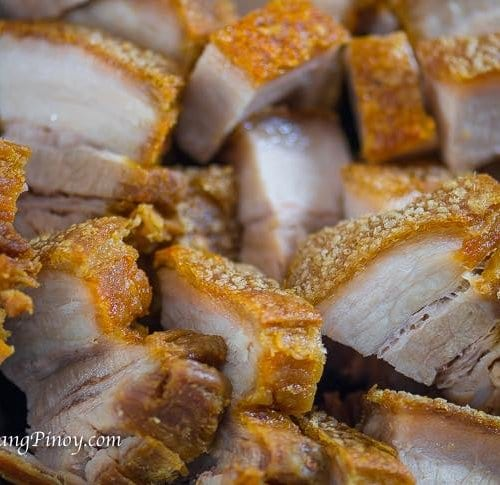

How to Make Lechon Kawali

Description
Lechon Kawali is a traditional Filipino dish that consists
of a crispy fried pork belly. It is usually served with rice and can
also be paired with optional sauces on the side including Mang Tomas
All-Purpose sauce or traditional soy sauce and vinegar dip.
Ingredients
- 1 ½ pounds of pork belly, cut into cubed pieces
- 3 gloves of garlic, crushed
- 2 bay leaves
- ½ teaspoon of salt
- ½ teaspoon of ground black pepper
- 2 cups of oil for frying
Cooking Steps
- Combine porkbelly, garlic, bay leaves, salt and pepper in a skillet
- Pour water until covered
- Bring to a boil, reduce heat, and simmer until tender (35-45 min)
- Drain and let sit at room temperature until pork air-dries
- Heat oil in deep-fryer or large saucepan to 350 dF
- Fry pork in hot oil in batches until golden brown (3-5 min)
- Remove fried pork with a slotted spoon
- Drain on a paper towel-lined plate